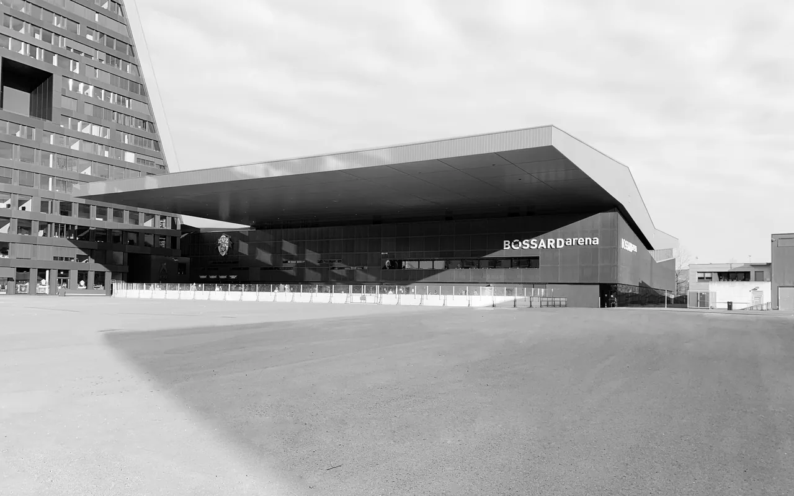

Erweiterung Bossard Arena, Zug
Das traditionsreiche Herti Stadion stiess Ende der 1990er-Jahre an seine räumlichen und infrastrukturellen Grenzen. Aus einem Investorenwettbewerb entstand die heutige Bossard Arena; 2010 wurde sie eröffnet.
Die neu erbaute Bossard-Arena verband Sport, Veranstaltung und Öffentlichkeit in einer kompakten Struktur. Das Eisfeld lag im Untergeschoss, kurze Wege erschlossen die Tribünen. Technik und Betrieb wurden in den «Katakomben» gebündelt, Gastronomie und VIP-Bereiche ergänzten das Raumprogramm im Süden.
Unter dem weit auskragenden Dach erweiterte im Winter ein zweites Eisfeld die Nutzungsmöglichkeiten. Im Sommer wurde der Arenaplatz zum grössten Veranstaltungsplatz der Stadt Zug und zum öffentlichen Stadtraum. Bereits im ersten Betriebsjahr stiegen die Zuschauerzahlen von rund 4’500 auf 6’000.